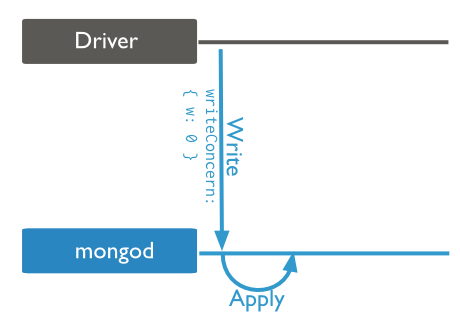
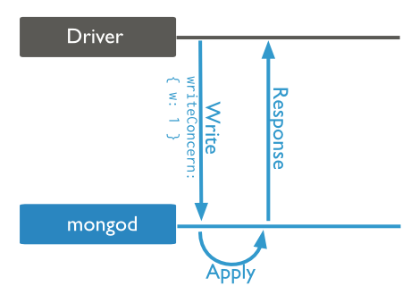
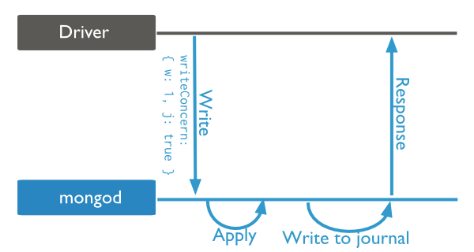
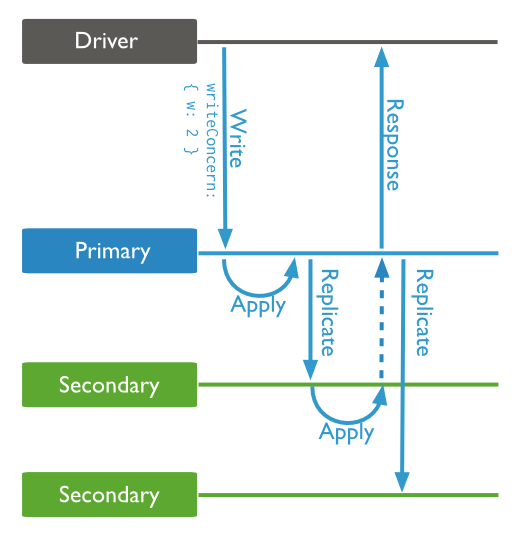

mongodb有一个write concern的设置，作用是保障write operation的可靠性。一般是在client driver里设置的，和db.getLastError()方法关系很大。
一般来说，所有的mongo driver，在执行一个写操作（insert、update、delete）之后，都会立刻调用db.getLastError()方法。这样才有机会知道刚才的写操作是否成功，如果捕获到错误，就可以进行相应的处理。处理逻辑也是完全由client决定的，比如写入日志、抛出错误、等待一段时间再次尝试写入等。作为mongodb server并不关心，server只负责通知client发生了错误。
有2点需要注意：
db.getLastError()方法是由driver负责调用的，所以业务代码不需要去显式调用。
driver一定会调用db.getLastError()函数，但是并不一定能捕获到错误。这主要取决于write concern的设置级别。
Write concern describes the guarantee that MongoDB provides when reporting on the success of a write operation. The strength of the write concerns determine the level of guarantee. When inserts, updates and deletes have a weak write concern, write operations return quickly. In some failure cases, write operations issued with weak write concerns may not persist. With stronger write concerns, clients wait after sending a write operation for MongoDB to confirm the write operations.
MongoDB provides different levels of write concern to better address the specific needs of applications. Clients may adjust write concern to ensure that the most important operations persist successfully to an entire MongoDB deployment. For other less critical operations, clients can adjust the write concern to ensure faster performance rather than ensure persistence to the entire deployment.
Changed in version 2.6: A new protocol for write operations integrates write concern with the write operations.
For details on write concern configurations, see Write Concern Reference.
The mongo shell and the MongoDB drivers use Acknowledged as the default write concern.
See Acknowledged for more information, including when this write concern became the default.
MongoDB allows clients to read documents inserted or modified before it commits these modifications to disk, regardless of write concern level or journaling configuration. As a result, applications may observe two classes of behaviors:
For systems with multiple concurrent readers and writers, MongoDB will allow clients to read the results of a write operation before the write operation returns. If the mongod terminates before the journal commits, even if a write returns successfully, queries may have read data that will not exist after the mongod restarts. Other database systems refer to these isolation semantics as read uncommitted. For all inserts and updates, MongoDB modifies each document in isolation: clients never see documents in intermediate states. For multi-document operations, MongoDB does not provide any multi-document transactions or isolation.
When mongod returns a successful journaled write concern, the data is fully committed to disk and will be available after mongod restarts.
For replica sets, write operations are durable only after a write replicates and commits to the journal of a majority of the voting members of the set. [1] MongoDB regularly commits data to the journal regardless of journaled write concern: use the commitIntervalMs to control how often a mongod commits the journal.
[1] For the purposes of write concern, w:majority refers to a majority of all the members in the set. As a result, arbiters, non-voting members, passive members, hidden members and delayed members are all included in the definition of majority write concern.
Clients can set a wtimeout value as part of a replica acknowledged write concern. If the write concern is not satisfied in the specified interval, the operation returns an error, even if the write concern will eventually succeed.
MongoDB does not “rollback” or undo modifications made before the wtimeout interval expired.
MongoDB has the following levels of conceptual write concern, listed from weakest to strongest:
getLastError()的返回值一定是null，即使之后的Apply发生了错误，driver也不知道。With an unacknowledged write concern, MongoDB does not acknowledge the receipt of write operations. Unacknowledged is similar to errors ignored; however, drivers will attempt to receive and handle network errors when possible. The driver’s ability to detect network errors depends on the system’s networking configuration.
Before the releases outlined in Default Write Concern Change, this was the default write concern.

getLastError()的响应。With a receipt acknowledged write concern, the mongod confirms that it received the write operation and applied the change to the in-memory view of data. Acknowledged write concern allows clients to catch network, duplicate key, and other errors.
MongoDB uses the acknowledged write concern by default starting in the driver releases outlined in Releases.
Changed in version 2.6: The mongo shell write methods now incorporates the write concern in the write methods and provide the default write concern whether run interactively or in a script. See Write Method Acknowledgements for details.

Acknowledged write concern does not confirm that the write operation has persisted to the disk system.
--journal参数来启动w:1之外，再设置journal:true或j:true，来捕获这个情况下的errorWith a journaled write concern, the MongoDB acknowledges the write operation only after committing the data to the journal. This write concern ensures that MongoDB can recover the data following a shutdown or power interruption.
You must have journaling enabled to use this write concern.
With a journaled write concern, write operations must wait for the next journal commit. To reduce latency for these operations, MongoDB also increases the frequency that it commits operations to the journal. See commitIntervalMs for more information.

NOTE Requiring journaled write concern in a replica set only requires a journal commit of the write operation to the primary of the set regardless of the level of replica acknowledged write concern.
Replica sets present additional considerations with regards to write concern.. The default write concern only requires acknowledgement from the primary.
With replica acknowledged write concern, you can guarantee that the write operation propagates to additional members of the replica set. See Write Concern for Replica Sets for more information.

NOTE Requiring journaled write concern in a replica set only requires a journal commit of the write operation to the primary of the set regardless of the level of replica acknowledged write concern.